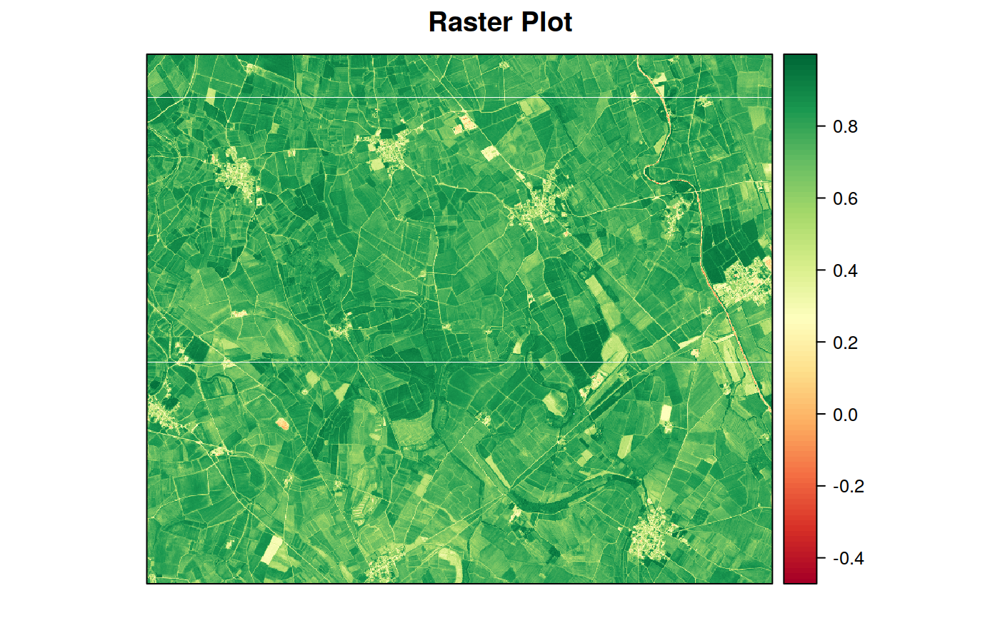
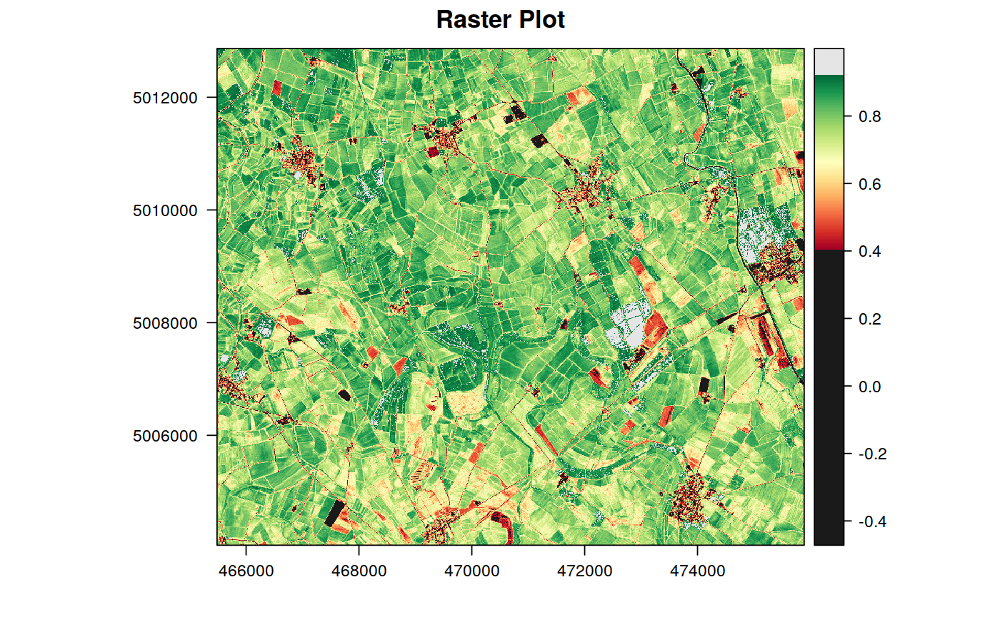

FUNCTION_DESCRIPTION
plot_rast(in_rast, band = 1, in_poly = NULL, in_points = NULL, background = FALSE, limits = NULL, tails = c(0.02, 0.98), palette = "RdYlGn", legend_type = "standard", col_outlow = "gray10", col_outhigh = "gray90", maxpixels = 5e+05, title = "Raster Plot", plot_now = TRUE, ...)
| in_rast | Input raster object or file |
|---|---|
| band | PARAM_DESCRIPTION, Default: 1 |
| in_poly | optional input polygon vector object or file to be overlayed on the plot, Default: NULL |
| in_points | optional input points vector object or file to be overlayed on the plot, Default: NULL |
| background | not used, Default: FALSE |
| limits |
|
| tails |
|
| palette | Palette to be used for colors (see |
| legend_type | "standard" or "custom" (see ecamples), Default: 'standard' |
| col_outlow | Color used to plot the values below the lower limit/tail. Can be a string corresponding to a valid "R" color or HEX representation, Default: 'gray10' |
| col_outhigh | Color used to plot the values below the lower limit/tail. Can be a string corresponding to a valid "R" color or HEX representation, Default: 'gray90' |
| maxpixels |
|
| title |
|
| plot_now |
|
| ... | Any other arguments (?) |
OUTPUT_DESCRIPTION
DETAILS
layer
stack,quantile
levelplot
brewer.pal
if(interactive()){ library(sprawl) in_rast <- system.file("extdata", "gNDVI.tif", package = "sprawl.data") in_vect <- create_fishnet(in_rast, pix_for_cell = 150) # plot only the raster plot_rast(in_rast) # plot only the raster with custom legend plot_rast(in_rast, legend = "custom") # add a polygon and change the legend, palette and maxpixels plot_rast(in_rast, in_poly = in_vect, tails = c(0.1, 0.99), legend = "custom", palette = "RdYlBu" , title = "RapidEye - GNDVI", maxpixels = 10e5) }#> Error in (function (classes, fdef, mtable) { methods <- .findInheritedMethods(classes, fdef, mtable) if (length(methods) == 1L) return(methods[[1L]]) else if (length(methods) == 0L) { cnames <- paste0("\"", vapply(classes, as.character, ""), "\"", collapse = ", ") stop(gettextf("unable to find an inherited method for function %s for signature %s", sQuote(fdef@generic), sQuote(cnames)), domain = NA) } else stop("Internal error in finding inherited methods; didn't return a unique method", domain = NA)})(list("character"), structure(function (obj) standardGeneric("proj4string"), generic = structure("proj4string", package = "sp"), package = "sp", group = list(), valueClass = character(0), signature = "obj", default = `\001NULL\001`, skeleton = (function (obj) stop("invalid call in method dispatch to 'proj4string' (no default method)", domain = NA))(obj), class = structure("standardGeneric", package = "methods")), <environment>): unable to find an inherited method for function ‘proj4string’ for signature ‘"character"’